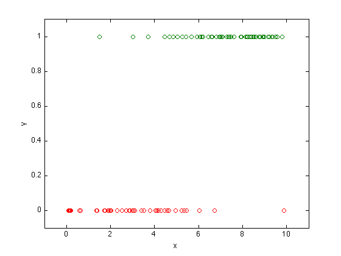

Figure 7.1: Logistic regression
randn('state',0);
rand('state',0);
a = 1;
b = -5 ;
m= 100;
u = 10*rand(m,1);
y = (rand(m,1) < exp(a*u+b)./(1+exp(a*u+b)));
plot(u,y,'o')
axis([-1,11,-0.1, 1.1]);
U = [ones(m,1) u];
cvx_expert true
cvx_begin
variables x(2)
maximize(y'*U*x-sum(log_sum_exp([zeros(1,m); x'*U'])))
cvx_end
ind1 = find(y==1);
ind2 = find(y==0);
aml = x(2); bml = x(1);
us = linspace(-1,11,1000)';
ps = exp(aml*us + bml)./(1+exp(aml*us+bml));
dots = plot(us,ps,'-', u(ind1),y(ind1),'o',...
u(ind2),y(ind2),'o');
axis([-1, 11,-0.1,1.1]);
xlabel('x');
ylabel('y');
Successive approximation method to be employed.
For improved efficiency, sedumi is solving the dual problem.
sedumi will be called several times to refine the solution.
Original size: 600 variables, 202 equality constraints
200 exponentials add 1600 variables, 1000 equality constraints
-----------------------------------------------------------------
Errors
Act Centering Conic Status
-----------------------------------
200 4.877e+00 2.483e+00 Solved
187 1.917e-01 3.038e-03 Inaccurate/Solved
200 1.308e-01 1.425e-03 Solved
187 3.250e-03 1.932e-05 Inaccurate/Solved
174 1.627e-04 3.268e-05S Inaccurate/Solved
187 3.632e-04S 1.562e-05 Inaccurate/Solved
187 8.138e-06 1.552e-05S Inaccurate/Solved
200 4.678e-03S 5.693e-06 Inaccurate/Solved
200 1.121e-04 3.265e-06 Inaccurate/Solved
200 8.993e-06 3.347e-06S Inaccurate/Solved
200 1.401e-06 3.244e-06S Inaccurate/Solved
-----------------------------------------------------------------
Status: Failed
Optimal value (cvx_optval): NaN
